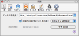
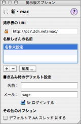

BathyScaphe の新機能
BathyScaphe の新機能
このバージョンの BathyScaphe には、２ちゃんねるのブラウズをさらに快適にするための、いくつかの新機能が含まれています。 BathyScaphe の詳細については、「BathyScaphe ヘルプ」や BathyScaphe の Web サイトを参照してください。
掲示板リストの同期
掲示板リストの同期機能が整理・強化され、「環境設定」から簡単に設定を行うことができます。また、自動的に掲示板リストを同期することができるようになりました。
強化されたプレビューインスペクタ
 標準のプレビューインスペクタは、さらに快適にイメージをプレビューするための様々な改良が行われました。プレビューしたイメージの履歴を一覧したり、ショートカットキーで素早く操作したり、フルスクリーン表示に切り替えてじっくりイメージを鑑賞することが可能です。
標準のプレビューインスペクタは、さらに快適にイメージをプレビューするための様々な改良が行われました。プレビューしたイメージの履歴を一覧したり、ショートカットキーで素早く操作したり、フルスクリーン表示に切り替えてじっくりイメージを鑑賞することが可能です。
「掲示板オプション」の強化
「掲示板オプション」インスペクタから、掲示板のさまざまな設定をまとめて確認、変更することが可能です。「掲示板オプション」インスペクタを表示するには、「掲示板」＞「掲示板オプションを表示」と選びます。
その他の新機能
その他の新機能について詳しくは、以下のトピックをそれぞれ参照してください。
- AA（アスキーアート）と思われるレスを、自動的に AA 用のフォントで表示することができるようになりました。「表示」環境設定で選択します。
「表示」を設定する - BathyScaphe の外観は整理され、新しいナビゲーションバーによってスレッドのナビゲーションと進行状況の確認がスマートに行えます。
図解 ブラウザウインドウ - 「ファイル」＞「URL を開く...」や、サービスメニュー、及び AppleScript を使って、スレッドの URL だけでなく掲示板の URL も認識できるようになりました。
スレッドや掲示板の URL を開く